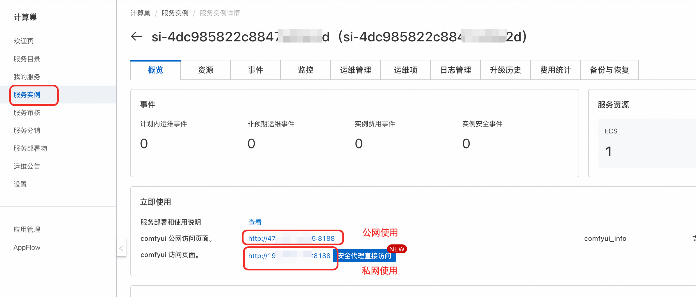

🎨 Flux1-Dev 模型介绍


Flux1-Dev 是由 Black Forest Labs 开发的先进文本到图像生成模型，代表了当前开源图像生成技术的最高标准。该模型基于 Flow Matching 技术，在图像质量、文本理解能力和生成速度方面都有显著提升。
✨ 核心特性
| ### 🏗️ 技术架构 - **先进架构**: 基于流匹配技术的扩散变换器架构 - **卓越质量**: 生成图像质量接近商业级模型标准 - **强大理解**: 集成完整 FP16 版本 CLIP-L 和 T5 文本编码器 | ### 🚀 性能优势 - **高分辨率支持**: 原生支持 1024×1024 及更高分辨率 - **快速生成**: 优化推理速度，支持少步生成 - **开源友好**: 完全开源，支持商业使用 - **风格多样**: 支持写实、艺术、概念设计等多种风格 |
📊 技术规格
| 规格项目 | 详细信息 |
|---|---|
| 模型类型 | 文本到图像生成 |
| 文本编码器 | T5-XXL + CLIP-L |
| VAE | 专用 flux-ae 变分自编码器 |
| 原生分辨率 | 1024×1024 |
| 支持分辨率 | 512×512 到 2048×2048 |
| 推荐步数 | 4-50 步（8 步为最佳平衡） |
🎯 模型优势
🖼️ 图像质量
细节丰富、色彩自然、构图合理
📝 文本跟随
精确理解复杂文本描述
🎨 风格多样
从照片写实到抽象艺术
⚡ 高效性能
相比同级别模型推理速度更快
🔧 配置说明
📁 模型文件清单
🌐 WebUI 环境
- **主模型**: `flux.1_dev_8x8_e4m3fn.safetensors` - **VAE**: `flux-ae.safetensors` - **文本编码器**: - `t5xxl_fp16.safetensors` - `clip_l.safetensors` - `clip_g.safetensors`🎛️ ComfyUI 环境
- **主模型**: `Flux1-dev.safetensors` - **VAE**: `flux-ae.safetensors` - **文本编码器**: - `t5xxl_fp16.safetensors` - `clip_l.safetensors`📖 使用指南
🎛️ ComfyUI 使用方法
🖱️ 界面操作
#### 📋 操作步骤
1. **选择工作流**: 在工作流框架中选择此工作流

2. **输入内容**: 输入您想要生成的内容

3. **创意示例**: 您可以输入一些有趣的内容，例如"关羽大战白雪公主"
4. **参数设置**: 设置图像分辨率和图像数量。如果想要加快生成速度，可以将 batch_size 设置为 1

5. **等待生成**: 等待图像生成完成
🔌 ComfyUI API 调用
获取 Token: 点击右上角按钮，打开底部面板，获取 token

获取服务器地址: 参考下图获取 COMFYUI_SERVER

📋 点击展开 API 调用 Python 代码
import requests, json, uuid, time, random, os
COMFYUI_SERVER, COMFYUI_TOKEN = "#在此填入您的服务器地址", "在此填入您的token"
UNET_MODEL, VAE_MODEL, CLIP1_MODEL, CLIP2_MODEL = "flux1-dev.safetensors", "ae.safetensors", "t5xxl_fp16.safetensors", "clip_l.safetensors"
PROMPT = "一个美丽的动漫女孩，长发飘逸，穿着优雅的裙子，站在魔法花园中，发光的花朵，柔和的光线，高质量，细节丰富"
class FluxClient:
def __init__(self):
self.base_url, self.client_id = f"http://{COMFYUI_SERVER}", str(uuid.uuid4())
self.headers = {"Content-Type": "application/json", **({"Authorization": f"Bearer {COMFYUI_TOKEN}"} if COMFYUI_TOKEN else {})}
def generate(self, prompt, aspect="1:1 square 1024x1024", steps=35, guidance=3.5, batch=1):
workflow = {"6": {"inputs": {"text": prompt, "clip": ["11", 0]}, "class_type": "CLIPTextEncode"}, "8": {"inputs": {"samples": ["13", 0], "vae": ["10", 0]}, "class_type": "VAEDecode"}, "9": {"inputs": {"filename_prefix": "Flux", "images": ["8", 0]}, "class_type": "SaveImage"}, "10": {"inputs": {"vae_name": VAE_MODEL}, "class_type": "VAELoader"}, "11": {"inputs": {"clip_name1": CLIP1_MODEL, "clip_name2": CLIP2_MODEL, "type": "flux", "device": "default"}, "class_type": "DualCLIPLoader"}, "12": {"inputs": {"unet_name": UNET_MODEL, "weight_dtype": "fp8_e4m3fn"}, "class_type": "UNETLoader"}, "13": {"inputs": {"noise": ["25", 0], "guider": ["22", 0], "sampler": ["16", 0], "sigmas": ["17", 0], "latent_image": ["85", 4]}, "class_type": "SamplerCustomAdvanced"}, "16": {"inputs": {"sampler_name": "dpmpp_2m"}, "class_type": "KSamplerSelect"}, "17": {"inputs": {"scheduler": "sgm_uniform", "steps": steps, "denoise": 1, "model": ["61", 0]}, "class_type": "BasicScheduler"}, "22": {"inputs": {"model": ["61", 0], "conditioning": ["60", 0]}, "class_type": "BasicGuider"}, "25": {"inputs": {"noise_seed": random.randint(1, 1000000000000000)}, "class_type": "RandomNoise"}, "60": {"inputs": {"guidance": guidance, "conditioning": ["6", 0]}, "class_type": "FluxGuidance"}, "61": {"inputs": {"max_shift": 1.15, "base_shift": 0.5, "width": ["85", 0], "height": ["85", 1], "model": ["12", 0]}, "class_type": "ModelSamplingFlux"}, "85": {"inputs": {"width": 1024, "height": 1024, "aspect_ratio": aspect, "swap_dimensions": "Off", "upscale_factor": 1, "batch_size": batch}, "class_type": "CR SDXL Aspect Ratio"}}
return requests.post(f"{self.base_url}/prompt", headers=self.headers, json={"prompt": workflow, "client_id": self.client_id}).json()["prompt_id"]
def status(self, task_id):
queue = requests.get(f"{self.base_url}/queue", headers=self.headers).json()
return "processing" if any(item[1] == task_id for item in queue.get("queue_running", [])) else "pending" if any(item[1] == task_id for item in queue.get("queue_pending", [])) else "completed" if task_id in requests.get(f"{self.base_url}/history/{task_id}", headers=self.headers).json() else "processing"
def download(self, task_id, output_dir="./flux_output/"):
history = requests.get(f"{self.base_url}/history/{task_id}", headers=self.headers).json()
files = []
if task_id in history:
for output in history[task_id]['outputs'].values():
if 'images' in output:
os.makedirs(output_dir, exist_ok=True)
for img in output['images']:
path = os.path.join(output_dir, img['filename'])
with open(path, "wb") as f: f.write(requests.get(f"{self.base_url}/view?filename={img['filename']}", headers=self.headers).content)
files.append(path)
return files
def main():
client = FluxClient()
print(f"🎨 正在生成: {PROMPT}")
task_id = client.generate(PROMPT)
print(f"🆔 任务ID: {task_id}")
while True:
status = client.status(task_id)
print(f"📊 状态: {status}")
if status == "completed": break
time.sleep(5)
files = client.download(task_id)
print(f"🎉 完成！生成了 {len(files)} 张图片: {files}")
if __name__ == "__main__": main()
🌐 Web UI 使用方法
🖱️ 界面操作
#### 🔧 配置步骤
1. **模型切换**: 在 Checkpoint 模型选择器中选择 Flux1-Dev (HyFY-8-Step-Hybrid-v1.0.safetensors) 模型
2. **VAE 和 CLIP 模型选择**: 选择 Clip_l.safetensors, t5xxl_fp16.safetensors, flux-ae.safetensors

3. **提示词输入**:
- **正向提示词**: 详细描述期望的图像
- **负向提示词**: 描述不想要的元素（Flux 模型对负向提示词不敏感）
4. **参数设置**:
- **步数**: 推荐 8-20 步
- **CFG**: 推荐 1.0-3.5（较低值效果更好）
- **采样器**: 推荐 Euler 或 DPM++ 2M
- **分辨率**: 1024×1024 或其他支持的尺寸
5. **生成图像**: 点击"生成"按钮开始生成
6. **结果处理**: 查看、保存或进一步编辑生成的图像
🎨 提示词示例
📸 写实风格
"一位年轻女性的专业肖像，自然光线，高分辨率，详细的皮肤纹理，照片写实"
🎨 艺术风格
"春天花园的印象派绘画，柔和的笔触，鲜艳的色彩，艺术杰作"
🚀 概念设计
"未来机器人设计，光滑的金属表面，发光的蓝色装饰，概念艺术，高度详细"
🏔️ 风景摄影
"黄金时刻的山景，戏剧性的云彩，专业摄影，超广角，HDR"
UI 界面使用示例

🔌 点击展开 API 调用 Python 代码
import requests
import base64
import time
import uuid
# 配置
base_url = "http://127.0.0.1:7680"
auth = ("admin", "${APIKEY}")
session_hash = str(uuid.uuid4())[:12]
# 设置 VAE/文本编码器
print("设置 VAE/文本编码器...")
requests.post(f"{base_url}/run/predict", json={
"data": [["flux-ae.safetensors", "t5xxl_fp16.safetensors", "clip_l.safetensors", "clip_g.safetensors"]],
"event_data": None,
"fn_index": 9,
"trigger_id": 1001,
"session_hash": session_hash
}, auth=auth)
time.sleep(3)
# 切换 FLUX 模型
print("切换 FLUX 模型...")
requests.post(f"{base_url}/queue/join", json={
"data": ["HyFY-8-Step-Hybrid-v1.0.safetensors"],
"event_data": None,
"fn_index": 8,
"trigger_id": 1002,
"session_hash": session_hash
}, auth=auth)
time.sleep(15)
# 生成图像
print("生成图像...")
result = requests.post(f"{base_url}/sdapi/v1/txt2img", json={
"prompt": "一只美丽的猫",
"steps": 8,
"width": 1024,
"height": 1024,
"cfg_scale": 1.0,
"sampler_name": "Euler"
}, auth=auth).json()
# 保存图像
if "images" in result:
with open("output.png", "wb") as f:
f.write(base64.b64decode(result["images"][0]))
print("图像已保存为 output.png")
else:
print("错误:", result)
🔄 其他内置模型
目前在服务中，Flux 模型将部署到 ECS 实例。除了当前的 Flux-dev 模型外，还支持 SD1.5 和 SD3 模型，可以在 Webui Forge 界面中动态切换。
### 支持的模型列表
- **Flux1-Dev**: 最新的高质量文本到图像生成模型
- **SD1.5**: 经典稳定扩散模型
- **SD3**: 最新版本稳定扩散模型
### 🎉 开始您的 AI 艺术创作之旅！

© 2009-2022 Aliyun.com 版权所有